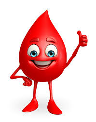

Give Blood
Myth 1: Blood donation hurts
Fact: The needle prick is the only pain one feels when donating blood. The area on the arm heals within a day or two. The weakness post donating blood can be dealt with by drinking plenty of water and eating.
Myth 2: If you smoke, you cannot be a blood donor
Fact: You can donate even if you are smoker. However, you must be at least 17 years old and weigh at least 50 kilograms. Also, you should avoid smoking for three hours after donating blood and also stay away from alcohol for 24 hours.
Myth 3:Donating blood makes the immune system weak
Fact: There is no such lasting danger to the immune system when you donate blood. While the Red Blood Cells return to normal within a few days, the White Blood Cells take a few weeks, However, if the body finds itself in danger, they can be produced quickly.
Myth 2: Blood donation is time consuming
Fact: Blood donation takes 45 minutes to an hour, only. The donation process itself takes barely 10-12 minutes, but the entire process from filling out forms to taking refreshments after donation takes that amount of time.
Myth 5:Blood donors become obese
Fact: Blood donation doesn't affect your body weight at all, it remains unchanged unless you decide to reward yourself with too much junk post-donation -- and that, my friend, is your responsibility and has nothing to do with blood donation, so stop finding excuses.
Myth 6: High BP patients cannot be blood donors
Fact: Those with blood pressure between 180 systolic and 100 diastolic can very well donate blood. This frame might be considered high, but it does not isolate you from donating blood. Moreover, blood pressure medicines do not interfere with the process at all.